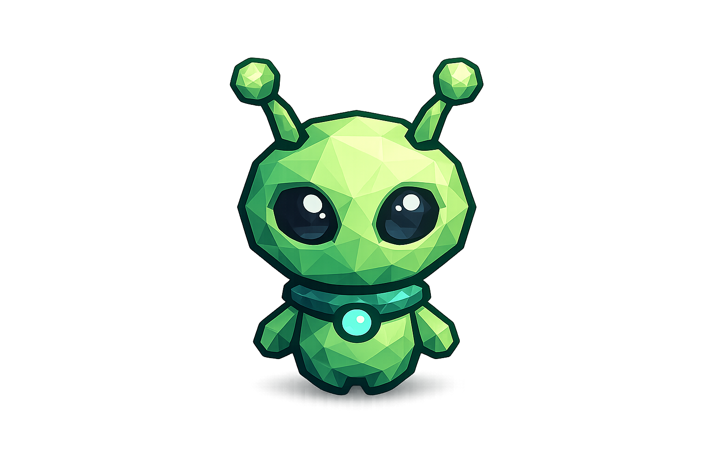
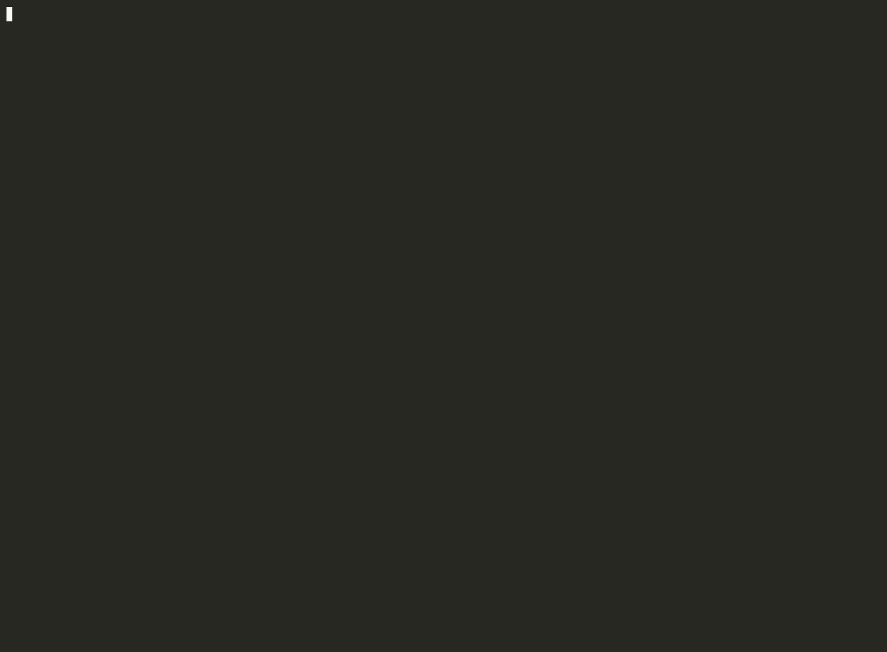

terminal-first · open source · single binary
DevOps at the
speed of thought.
PIPER diagnoses your servers, reads the logs, and proposes the fix — behind a deterministic gate that means it can never act alone.
the LLM proposes · the gate validates · you approve
$ curl -fsSL https://antoniociccia.github.io/piper/install | sh
macOS & Linux, x64 & arm64 — or grab a binary from the latest release. The script is 40 lines you can read first.

One sentence. Twelve checks. A root cause.

What you're watching: a fixed, read-only discovery sweep — specs, processes, ports, containers — then a report where every claim cites the command that produced it. PIPER finds two dead containers, asks permission to read their logs, and connects the dots: redis was OOM-killed, so the worker refused to start. Nothing ran without a human saying yes.
Built around a deterministic gate
not a smarter promptGrounded diagnosis
The LLM never executes anything. It picks typed actions from a fixed catalog; one audited executor runs them. Every claim in a report carries its evidence [ev-N] — no invented hostnames, paths, or metrics. Ever.
Mutations need you
Three tiers: read · mutate · destructive.
A mutation shows the verbatim command, the dry-run, and a snapshot before it asks.
Destructive commands prompt fresh every single time — they can never be auto-approved.
Even sudo is gated, and passwords never touch the model.
Watch mode
Describe what to monitor in plain English; PIPER compiles it into deterministic checks that cost zero LLM calls per tick. The model wakes only on a real anomaly — then diagnoses, and proposes a fix through the same gate.
What it will never do
Five minutes to a grounded report
First run sets up a local model or your API key, on your machine. PIPER is local-first: one binary, an embedded database, no cloud component required.